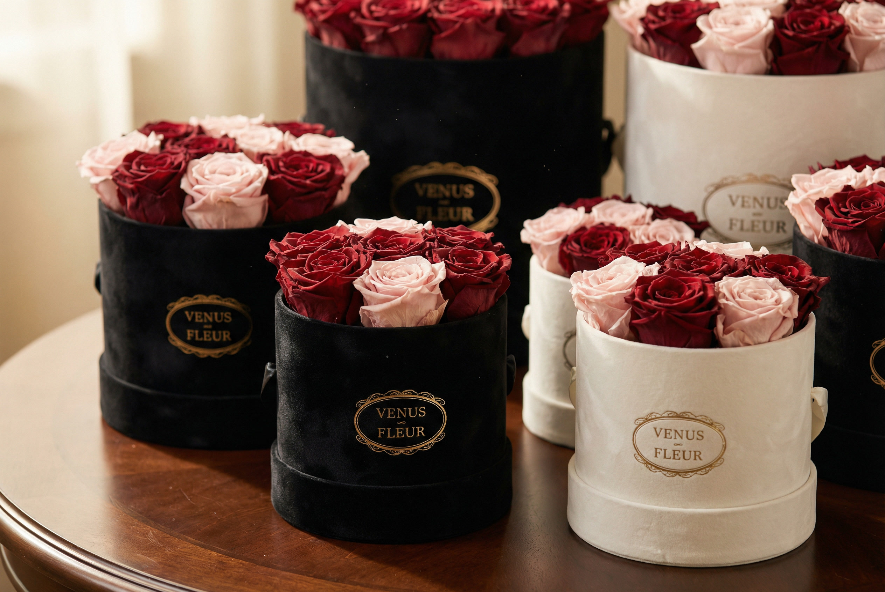

Luxury I'm Sorry
Gifts
Same-Day in Dubai. Shipped Worldwide.
Same-Day in Dubai. Shipped Worldwide.
Global Delivery
Your apology doesn't need a passport. Wherever they are — across town or across the world — one message is all it takes to have this waiting at their door.
Send Now
Whether the misunderstanding happened in the boardrooms of DIFC, a private villa on Palm Jumeirah, or a living room anywhere in the world, the act of apologizing is governed by an unwritten code of sincerity. At Venus Fleur, we understand that "I am sorry" is more than a phrase; it is a restoration of balance.
Preserved roses have emerged as the premier choice for a meaningful apology gift. A bouquet of wilting fresh flowers can inadvertently signal a fleeting sentiment — here today, discarded within the week. A signature Venus Fleur box, where each rose is locked in its peak beauty for over 365 days, communicates a permanent commitment to making amends instead.
A gift is a gesture that supports a genuine apology — it is not a substitute for one. The right words, said honestly, are what repair trust. What a thoughtful, lasting gift does is reinforce those words: it gives the person a tangible reminder of your sincerity in the days after the conversation, when a fresh bouquet would already be wilting and the moment would have passed.
An effective apology, wherever it takes place, rests on three pillars: Timing, Quality, and Discretion.
Timing: Misunderstandings in Business Bay or Downtown Dubai often call for swift action. This is why our 2-hour emergency delivery is not just a service, but a tool for reconciliation.
Quality: A generic gift signals a generic apology. By choosing handcrafted eternal roses, you are signaling that the recipient's value to you is worth a premium investment.
Discretion: Privacy matters. Venus Fleur offers anonymous delivery options, allowing your gesture to arrive with grace before any conversation takes place.
Answer three quick questions and we'll recommend the right gesture for your situation.
Whether it is a missed anniversary or a simple disagreement, a sorry gift for her should be romantic yet respectful. Our "Royal Red" collection is often used for deep romantic apologies, but for a "fresh start" vibe, we highly recommend our blush or champagne-toned roses. They signal appreciation and a softer, more reflective mood. Pair your arrangement with our Anniversary Collection to begin a new chapter together.
Mistakes can happen in high-pressure environments, from DIFC to any corporate office. A luxury apology gift to a client or business partner should be understated and sophisticated. A single, large preserved rose in a black velvet box is the gold standard — it shows you value the partnership without overstepping professional boundaries.
For family members, a larger arrangement of white preserved roses is the ideal choice. It represents the eternal nature of family bonds, proving that a temporary rift cannot overshadow years of shared history.
The terms get used interchangeably, but there's a useful distinction. "Sorry flowers" usually means a quick, everyday bouquet — a fine gesture for a small slip-up, but one that fades within a week, right around the time the relationship is still finding its footing again. An apology gift is a step further: a considered, lasting item chosen specifically for the weight of the moment.
This is where a sorry roses bouquet made from preserved roses sits in between the two — it has the familiar, universal language of a rose bouquet, but with the permanence of a proper gift. It's why so many of our clients searching for a simple sorry gift end up choosing a preserved arrangement instead of a fresh one: it reads as more considered without being over the top.
Color carries meaning, and choosing the right one can make an apology flowers gesture land the way you intend it to.
White roses are the universal choice — purity, humility, and a clean slate. They work for almost any relationship: partner, parent, friend, or colleague. Blush and champagne roses soften the tone further, better suited to a partner or someone close, where the moment calls for warmth rather than formality. Deep red roses are reserved for romantic apologies where love, not just regret, needs to be communicated — they can read as too intense for a colleague or a parent. Yellow roses are traditionally tied to friendship, so while lovely as a gift on their own, they're not the strongest choice for a romantic apology. For a corporate or professional misstep, stay with white or cream — it's neutral, composed, and won't be misread.
The card matters as much as the gift. A strong apology gift note follows three simple rules: be specific about what you're apologizing for, avoid the word "but," and keep it short. "I'm sorry I missed your call when you needed me — it won't happen again" says more than a generic "I'm sorry" ever will. Every Venus Fleur order includes a hand-written stationery card, so you can focus on the words while we take care of the presentation.
A well-chosen gift can undercut its own message if a few basics are missed. Sending it without any note or context can leave the recipient guessing at your intent. Over-explaining or over-justifying in the card can come across as making excuses rather than taking responsibility. Choosing a gift that's disproportionate to the situation — too extravagant for a minor issue, or too small for a serious one — can send the wrong signal either way. And treating the gift as the apology itself, rather than a gesture that accompanies a real conversation, is the most common misstep of all.
An apology shouldn't be limited by geography. Because our roses are preserved rather than fresh-cut, they travel far better than a traditional bouquet — there's no water, no wilting, and no race against the clock. Orders shipped to the United States typically arrive within 2-3 business days, fully tracked from our Dubai atelier to your door.
Every international order is packed in reinforced, climate-considered packaging to protect the arrangement in transit, so the box that arrives looks exactly as it did the day it was handcrafted. It's the same white-glove standard we apply to a same-day delivery in Business Bay, adapted for a much longer journey.
What makes Venus Fleur a trusted name for luxury apology gifts? It is our obsession with detail. Each rose is sourced from the world's most elite growers and undergoes a bio-based preservation process that maintains the natural sap and texture of the flower.
Our delivery service is also unique. We offer white-glove handling, meaning your gift is treated with the utmost care from our workshop in Business Bay to its final destination — whether that's a villa in Palm Jumeirah or a home in the United States. We also offer anonymous delivery for those who wish to let the roses do the talking first.
If you are looking to combine an apology with a celebration of a new chapter, we invite you to browse our Anniversary Collection or our comprehensive Luxury Gifting Guide for expert insights into fine floral gifting.
Preserved eternal roses are widely considered the premier apology gift. Venus Fleur roses are particularly sought after because they last for over a year rather than wilting within days.
Yes, we specialize in emergency delivery across Dubai. Depending on your location in Business Bay, Downtown, or DIFC, we can often deliver within 2 hours of confirmation.
Yes. Orders to the United States typically arrive within 2-3 business days, fully tracked and packed to protect the roses in transit.
Yes. Since they're preserved rather than fresh-cut, they don't need water and hold up far better in transit than a traditional bouquet.
A gift supports a sincere apology, it doesn't replace one. Pair your gesture with an honest conversation or handwritten note for the best result.
There's no fixed rule. A single rose in a keepsake box suits an understated apology, while a full arrangement suits a bigger gesture. Sincerity matters more than count.
White or cream roses are best for corporate settings. They're neutral, professional, and signal a clean, sincere start to future business.
Absolutely. Every order comes with a high-quality, branded stationery card. Provide your message at checkout and we'll hand-write it for a personal touch.
A good sorry gift is considered and lasting rather than generic. Preserved roses stay beautiful for over a year, making the gesture feel more deliberate than a fresh bouquet.
Blush or champagne preserved roses strike a warm, reflective tone for a partner, while deep red suits a more romantic apology. Pair the flowers with a sincere handwritten note.
Sorry flowers usually means a quick fresh bouquet, while an apology gift is more considered and longer-lasting. A preserved rose bouquet combines both.
Yes — roses are one of the most universally understood apology gifts, and a preserved bouquet won't wilt away within days of the apology.
Fresh flowers wilt within days, but an apology should be enduring. Preserved roses stay perfect for over a year, symbolizing a commitment that doesn't fade with time.
A gift supports a genuine apology — it isn't a substitute for one. Pairing an arrangement with a heartfelt conversation or handwritten note works best.
White is the safe, universal choice. Blush and champagne suit a close partner. Deep red is for romantic apologies. White or cream is best for corporate situations.